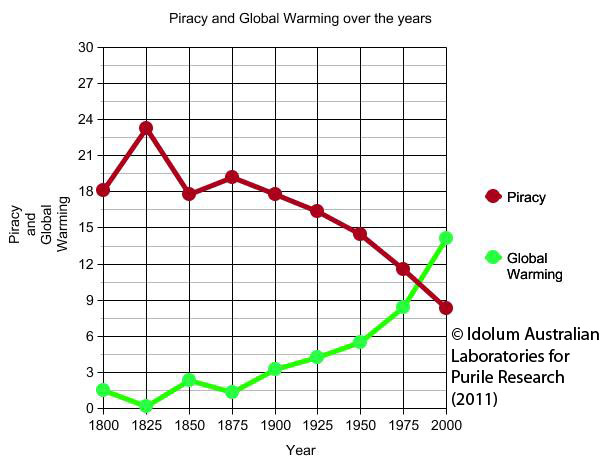

Как не дать «дате» себя обмануть.
Что мы можем и не можем извлечь из данных.
Илья Воронцов
Мастерская дата-журналистики Системного Блока, ЛШ-2024, Дубна
Можно ли данным верить?
Можно ли данным верить?
Главный вопрос: откуда данные и как собраны
Репрезентативность
Мы измерили рост участников школы.
Можем ли мы написать материал о том, что мальчики выше девочек?
Только с оговорками
Репрезентативность
- Генеральная совокупность — все люди мира (включая ещё не родившихся)
- Выборка — подмножество генеральной совокупности
Репрезентивность — соответствие характеристик выборки и генеральной совокупности
Репрезентативность
- В мастерской все люди из России и ближних стран
- Нет ли у нас мастерской баскетбола?
- А много ли у нас мальчиков/девочек 2 лет?
- Бывают очень высокие девочки и очень низкие мальчики
- Самая низкая учительница выше самого высокого пацана 5-лет
- ...
Репрезентативность
Чуть более осторожный тезис: среди российской молодёжи мальчики в среднем выше девочек.
Статистическая гипотеза
У нас есть репрезентативная выборка, состоящая из 10 мальчиков и 10 девочек.
Увидели, что девочки в среднем на 2 см выше мальчиков.
Можем об этом писать?
Нет. Это слишком маленькая выборка. Если по случайным причинам будут выбраны другие 20 человек, результат сильно поменяется.
Статистическая значимость
Стат.значимость P-value — степень невероятности того, что эффекта нет.
Чем она меньше, тем более мы уверены в эффекте (мальчики ростом отличаются от девочек).
Статистическая значимость
Чем больше размер выборки, тем меньший эффект мы можем поймать
Размер выборки
Верим ли мы нулям?
Размер выборки
Методология сбора данных влияет

Выявленные заболевшие COVID-19
А хорошо ли, что данные стабильны?
А хорошо ли, что данные стабильны?
Источник: https://t.me/theinsider/26767
Данные обретают смысл в контексте
Констекст бывает шире, чем кажется
Констекст бывает шире, чем кажется
Констекст бывает шире, чем кажется
Корреляция не влечёт каузацию
Корреляция не влечёт каузацию
Корреляция не влечёт каузацию
In the God given units
Количество возможных партий в Го больше, чем число атомов во Вселенной.
Продолжаем сравнивать несравнимое
Капитализация NVidia превысила годовой ВВП России.
Нормировка
Нормировка — способ сопоставить величину с чем-то другим, измерить её «в единицах» другой величины. Например, измерить бюджеты 2015, 2020, 2025 годов в бюджетах 2010 года.
Нормировка
Когда у вас нет генеральной совокупности, вы можете говорить только про доли (частоты)
Нормировка
Caution: множественный выбор не суммируется к 100%.
КДПВ
Как нормировать данные
Среднее против медианы
Как нормировать данные
Среднее против медианы
Сенсация-сенсация!
Целых 50% жителей Московской области получают зарплату меньше медианной.
Нестабильные статистики
Среднее — нестабильная по отношению к выбросам величина, поэтому медиана лучше
Нестабильные статистики
А что ещё нестабильно? min и max
Чем заменить? 5% квантиль и 95% квантиль
Квантили (aka квартили/перцентили)
На что нормировать?
- Разбивку бюджета по категориям?
На сумму - Бюджет по годам?
На бюджет в реперный год.
На средний бюджет за прошлые несколько лет.
На максимум (чтобы влезло на картинку). - Температуру?
Не нормировать; рядом провести среднее.
(для науки) Перевести в Z-score
В чём мерять — важно
В чём мерять — важно
Для разных задач может быть более релевантно измерять в разных валютах
Например, доллары для оценки импорта, рубли — для оценки внутренних цен на местные товары
В чём мерять — важно
Если вам важно сравнить размеры экономик стран, вы сравниваете ВВП
Если вам важно сравнить производительность труда, вы сравниваете ВВП на душу населения
Если вам важно сравнить уровень благосостояния граждан экономик стран, вы сравниваете ВВП на душу населения по паритету покупательной способности
Стратификация выборки
Самая низкая учительница (всё ещё) выше самого высокого пацана 5-лет
Но корректно ли их сравнивать?
Нет: лучше взять их как независимые группы, и сравнивать группы разных возрастов независимо.
Парадокс Симпсона

Парадокс Симпсона
Парадокс Симпсона
Неоднородность групп может сильно исказить результаты. Они будут больше говорить про размер групп, чем про эффект внутри группы
Нормировку лучше проводить на каждой группе независимо
Как отобразить степень нашей неуверенности в данных?
Box-plot с усами

Ус заканчивается на какой-то точке данных, поэтому может оказаться короче 1.5 IQR
Как отобразить степень нашей неуверенности в данных?
Box-plot с усами
Доверительный интервал
Caution: ошибки накапливаются
Если вы, например, делите одну неточную величину на другую, степень ошибки (неточности/неуверенности) может резко возрасти.